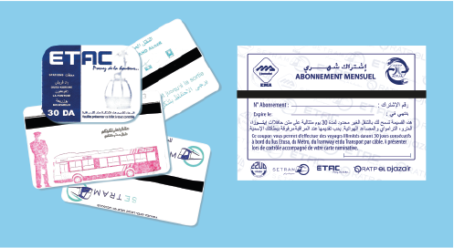

Projets et Actions réalisés
Actions réalisées ou engagées
Malgré son jeune âge et ses moyens réduits, l’AOTU-A a engagé en coordination avec ses partenaires les actions suivantes :
1. L’abonnement mensuel unique commercialisé à partir du 7 février 2016 permettant aux usagers de voyager avec un seul et unique titre de transport sur quatre modes de transport, à savoir: métro, tramway, transport par câble et autobus ETUSA.
2. La restructuration du réseau de transport urbain d’Alger : Dans une première phase, deux enquêtes (Origine-Destination et Montées-Descentes) ont été réalisées dans ce cadre durant la période allant du 18 au 28 avril 2016, par une équipe constituée d’éléments de l’AOTU-A et de l’ETUSA.
3. Interopérabilité des systèmes billétiques : le 30 sept 2015 une 1ère réunion s’est tenue au niveau du siège de l’AOTUA regroupant l’ensemble des opérateurs de transport urbain d’Alger, suite à cela la mise en place d’un groupe de travail composé de techniciens de l’ensemble des acteurs concernés, une phase diagnostic des systèmes exploités a été remise à l’AOTUA qui a lancé officiellement à compter de Mars 2016. La phase d’élaboration du référentiel technique et fonctionnel qui permettra la concrétisation sur le terrain de l‘interopérabilité, le dossier est en cours jusqu’à ce jour.
4. La chambre de compensation des transports interopérables Algérois « CCTIA » : Pour garantir l’interopérabilité des systèmes, la mise en place d’une chambre de Compensation au niveau de l’AOTU-A est l’un des pré-requis. La Chambre de Compensation des Transports Interopérables Algérois aura pour rôle de faire remonter les transactions billettiques générées par les opérateurs de transport, en garantissant la sécurité, l a confidentialité et l’auditabilité de ces échanges. Elle permettra également une répartition équitable des recettes entre les opérateurs.
5. Etude de Réorganisation et Professionnalisation du Secteur privé de Transport Routier de personnes dans le périmètre de transport urbain d’Alger (enquête chauffeurs et receveurs).
6. Projet d’actualisation du Plan de Déplacement Urbain au niveau de l’agglomération algéroise à l’horizon 2029 : L’AOTU-A s’est inscrite dans le cadre du projet de renforcement des capacités dans le domaine de l’environnement (PRCDE) dans le cadre de la coopération technique belge (CTB).Dans ce cadre, la rédaction des TDR ont été achevés en coordination avec la CTB.
7. Achèvement du projet de cartographie du réseau des transports urbains en s’appuyant sur les systèmes d’informations géographiques.
8. Système d’information voyageur.

9. Réalisation de la brochure de l'Autorité
81 pages Format 195x130